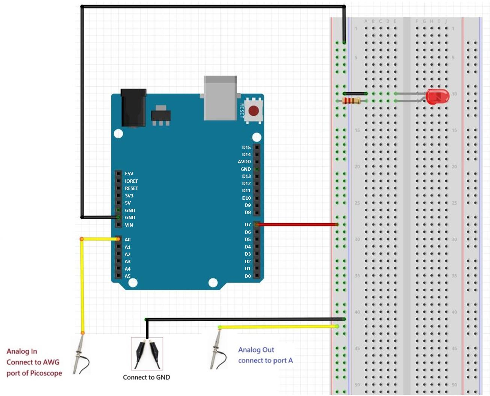
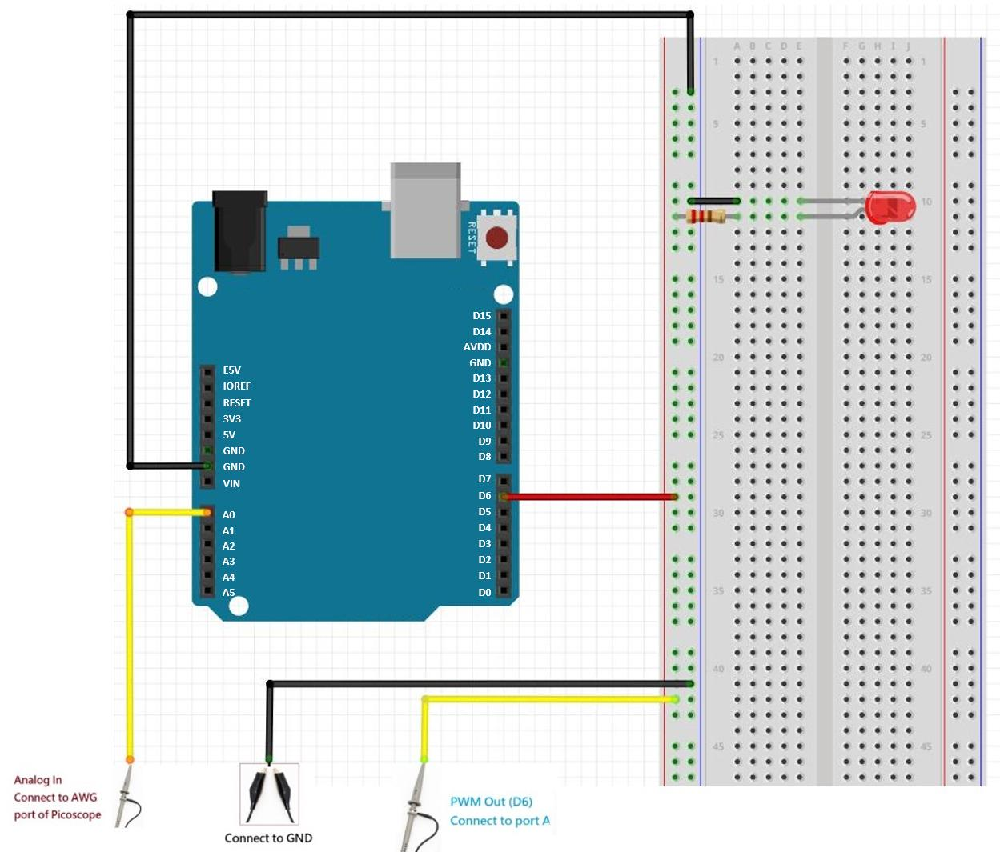
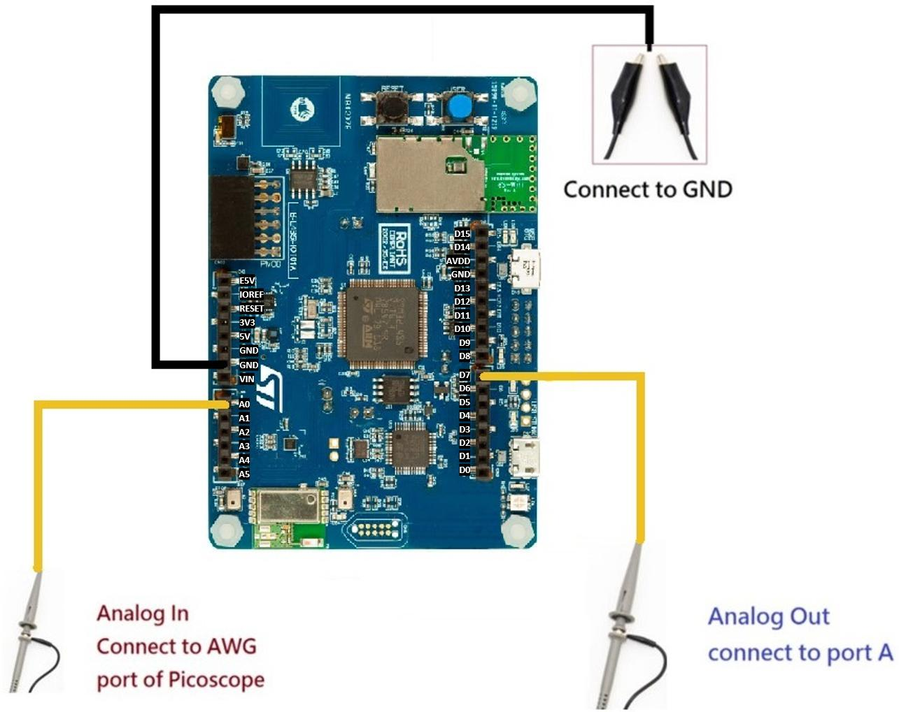

Contents
The goal of this lab is to learn:
- Analog input of mbed
- Serial communication with PC
1 Lab Due
Mar. 2, 2022
2 Lab Introduction
The AnalogIn API is used to read (measure) an external voltage applied to an input pin. An analog to digital converter circuit (ADC) will sample and quantized the signal to digital formats.
Because we need a ADC circuit to read from an analog signal, only certain pins of B_L4S5I_IOT01A are connected to ADC and capable of making these measurements. Please check the documentation of B_L4S5I_IOT01A for ADC pins.
3 Equipment List
- B_L4S5I_IOT01A * 1
- PicoScope * 1
- Wire * 20
- Breadboard * 1
- LED * 1
4 Lab Description
4.1 Lecture Notes
- Chapter 5: Analog Input ch5_adc.pdf
4.2 Control LED by AnalogOut
Connect the B_L4S5I_IOT01A to the picoscope
In this configuration, B_L4S5I_IOT01A will read an analog signal and convert it back to analog signal again to an output pin. We will observe the output pin with both picoscope and a LED.
Connect the picoscope to your computer. Screenshot
Connect the first probe to the Channel A like this.
Connect the second probe to the port AWG of picoscope like this
Connect the first probe to the pin of D7 and the second to the pin of A0 . Screenshot

Create a new program.
Open the File menu and select New Program....
Select "empty Mbed OS program" under MBED OS 6 Enter 4_1_LED_Analog for Program name. Check "Make this the active program" (default). Under "Mbed OS Location", check "Link to an existing shared Mbed OS instance" and select "~/Mbed Programs/mbed01/mbed-os/". This will reuse Mbed OS in mbed01/. Click "Add Program".
Copy the following codes into main.cpp.
1#include "mbed.h" 2 3AnalogOut Aout(D7); 4AnalogIn Ain(A0); 5int main(){ 6 while(1){ 7 Aout = Ain; 8 } 9}
Compile and run the program
Start the picoscope app
Setup picoscope to generate a square wave
Select "input range A" as +-5 and collection time as 1 ms/div: screenshot
Generate the analog signal.
There are many different signal types that we can select. Please choose square wave as a demo: screenshot
A square wave will show on the monitor.
Also note that the LED will blink according to the frequency of the square wave.
Screenshot your result of picoscope.
{kind=link}
{kind=link}
{kind=link}
{kind=link}
{kind=link}
{kind=link}
{kind=link}
{kind=link}
4.3 Control LED by PwmOut
Connect the B_L4S5I_IOT01A to the picoscope
In this configuration, B_L4S5I_IOT01A will read an analog signal and convert it to a PWM signal again to an output pin. We will observe the output pin with both picoscope and a LED.
Connect the picoscope to your computer. Screenshot
Connect the first probe to the Channel A like this.
Connect the second probe to the port AWG of picoscope like this
Connect the first probe to the pin of D6 and the second to the pin of A0 . Screenshot

Create a new program.
Open the File menu and select New Program....
Select "empty Mbed OS program" under MBED OS 6 Enter 4_2_LED_PWM for Program name. Check "Make this the active program" (default). Under "Mbed OS Location", check "Link to an existing shared Mbed OS instance" and select "~/Mbed Programs/mbed01/mbed-os/". This will reuse Mbed OS in mbed01/. Click "Add Program".
Copy the following codes into main.cpp.
1#include "mbed.h" 2 3PwmOut PWM1(D6); 4AnalogIn Ain(A0); 5int main() 6{ 7 while (1) 8 { 9 PWM1.period_ms(5); 10 PWM1 = Ain; 11 printf("%f\n\r", PWM1.read()); 12 ThisThread::sleep_for(50ms); 13 } 14}
Compile and run the program
Switch to the picoscope app
Setup picoscope to generate a sine wave
Select "input range A" as +-5 and collection time as 200 ms/div: screenshot
Generate the analog signal.
Please choose sine wave as a demo: screenshot
The Output terminal will show the analog input voltage values every 50ms: like this.
Screenshot your result on the terminal.
The PWM signal will shows on the monitor.
Observe the light of LED. It will be like a breathing led.
Screenshot your result of picoscope.
{kind=link}
{kind=link}
{kind=link}
{kind=link}
{kind=link}
4.4 AnalogIn with FFT analysis
4.4.1 Connect circuit
Connect the B_L4S5I_IOT01A to the picoscope
In this configuration, B_L4S5I_IOT01A will read an analog signal and convert it back to analog signal again to an output pin. We will observe the output pin with both picoscope and a LED.
Connect the picoscope to your computer. Screenshot
Connect the first probe to the Channel A like this.
Connect the second probe to the port AWG of picoscope like this
Connect the first probe to the pin of D7 and the second to the pin of A0 . Screenshot
4.4.2 New Mbed program
Create a new program.
Open the File menu and select New Program....
Select "empty Mbed OS program" under MBED OS 6 Enter 4_4_FFT_analysis for Program name. Check "Make this the active program" (default). Under "Mbed OS Location", check "Link to an existing shared Mbed OS instance" and select "~/Mbed Programs/mbed01/mbed-os/". This will reuse Mbed OS in mbed01/. Click "Add Program".
Copy the following codes into main.cpp.
1#include "mbed.h" 2 3AnalogOut Aout(D7); 4AnalogIn Ain(A0); 5 6int sample = 128; 7int i; 8 9float ADCdata[128]; 10 11int main(){ 12 for (i = 0; i < sample; i++){ 13 Aout = Ain; 14 ADCdata[i] = Ain; 15 ThisThread::sleep_for(1000ms/sample); 16 } 17 for (i = 0; i < sample; i++){ 18 printf("%f\r\n", ADCdata[i]); 19 ThisThread::sleep_for(100ms); 20 } 21}
Compile and flash the program.
Please quit Mbed Studio, so it does not use the serial port of the B_L4S5I_IOT01A.
4.4.3 Setup Picoscope
Start the picoscope
Setup picoscope to generate a sine wave
Select "input range A" as +-5 and collection time as 1 s/div: screenshot
Generate the analog signal.
Please choose sine wave, start frequency 30 Hz and set offset to 1V: screenshot
{kind=link}
{kind=link}
4.4.4 Install Python packages
Start a Terminal app in Mac OS or Git Bash in Windows.
Install matplotlib
$ python3 -m pip install -U matplotlib
For Windows, please replace
python3withpython.exe, if you installed Python from www.python.org. If you use MinGW's Python, the command is the same. Also, for Python installed from www.python.org, please check that in Window Path environment variable, Path "C:\msys64\mingw64\bin." should be set after "C:\Users\<your user name>\AppData\Local\Programs\Python\Python310\" in order to use the Windows Python in Git Bash.If the installation gives warning about PATH, please add and modify PATH environment variable according to your OS.
Install PySerial
$ python3 -m pip install pyserial
If the installation gives warning about PATH, please add and modify PATH environment variable according to your OS.
Copy the following codes into FFT.py in VS code and save the script to ~/Mbed Programs/4_4_FFT_analysis.
1import matplotlib.pyplot as plt 2import numpy as np 3import serial 4import time 5 6Fs = 128.0; # sampling rate 7Ts = 1.0/Fs; # sampling interval 8t = np.arange(0,1,Ts) # time vector; create Fs samples between 0 and 1.0 sec. 9y = np.arange(0,1,Ts) # signal vector; create Fs samples 10 11n = len(y) # length of the signal 12k = np.arange(n) 13T = n/Fs 14frq = k/T # a vector of frequencies; two sides frequency range 15frq = frq[range(int(n/2))] # one side frequency range 16 17serdev = '/dev/ttyACM0' 18s = serial.Serial(serdev) 19for x in range(0, int(Fs)): 20 line=s.readline() # Read an echo string from B_L4S5I_IOT01A terminated with '\n' 21 # print line 22 y[x] = float(line) 23 24Y = np.fft.fft(y)/n*2 # fft computing and normalization 25Y = Y[range(int(n/2))] # remove the conjugate frequency parts 26 27fig, ax = plt.subplots(2, 1) 28ax[0].plot(t,y) 29ax[0].set_xlabel('Time') 30ax[0].set_ylabel('Amplitude') 31ax[1].plot(frq,abs(Y),'r') # plotting the spectrum 32ax[1].set_xlabel('Freq (Hz)') 33ax[1].set_ylabel('|Y(freq)|') 34plt.show() 35s.close()
Replace "serdev" in above FFT.py created by your Operating System. Go to a Terminal app or Git Bash in Windows.
Use the following command to find the device name of the mbed USB serial connection.
$ python3 -m serial.tools.list_ports -vIn general, lookup for "STM" or "STLink".
In Windows, you may get the following message. The COM3 is the device name.
1 ports found COM3 desc: STMicroelectronics STLink Virtual COM Port (COM3) hwid: USB VID:PID=0483:374B SER=0671FF3134354D5043094618 LOCATION=1-3.2:x.2In Mac OS, you may get the following message (there are many other devices). The /dev/cu.usbmodem14603 is the device name.
/dev/cu.usbmodem14603 desc: STM32 STLink - ST-Link VCP Data hwid: USB VID:PID=0483:374B SER=0671FF3134354D5043094618 LOCATION=20-6
Execute above Python script in a Terminal app in Mac OS or Git Bash in Windows.
$ cd ~/Mbed\ Programs/4_4_FFT_analysis$ python3 FFT.py
Please push the "Reset" button on B_L4S5I_IOT01A to start the mbed program again. Also make sure Picoscope is generating a sine wave signal.
The result will be like this
Generate another signal with other frequency.
Generate the analog signal.
Please choose sine wave, start frequency 10 Hz and set offset to 1V: screenshot
Re-execute the Python script, the result will like this
Save the plot of python code.
{kind=link}
{kind=link}
{kind=link}
4.5 Measure the conversion timing
Connect the B_L4S5I_IOT01A to the picoscope
Connect the picoscope to your computer. Screenshot
Connect the first probe to the Channel A like this.
Connect the second probe to the port AWG of picoscope like this
Connect the first probe to the pin of D7 and the second to the pin of A0 . Screenshot

Create a new program.
Open the File menu and select New Program....
Select "empty Mbed OS program" under MBED OS 6 Enter 4_5_Exploring_Nyquist for Program name. Check "Make this the active program" (default). Under "Mbed OS Location", check "Link to an existing shared Mbed OS instance" and select "~/Mbed Programs/mbed01/mbed-os/". This will reuse Mbed OS in mbed01/. Click "Add Program".
Copy the following codes into main.cpp.
1#include "mbed.h" 2 3AnalogOut Aout(D7); 4AnalogIn Ain(A0); 5float ADCdata; 6 7int main(){ 8 while(1){ 9 ADCdata = Ain; 10 Aout = ADCdata; 11 ThisThread::sleep_for(2s); 12 } 13}
Compile and run the program
Switch to the picoscope
Setup picoscope to generate a square wave
Select "input range A" as +-5 and collection time as 1 s/div: screenshot
Generate the analog signal.
Please choose sine wave, set Start Frequency to 1 HZ and set offset to 1V. Screenshot
Change the sampling rate and observe the difference between each wave
If the sampling frequency is less than the twice of signal frequecy (The signal frequency is 1 Hz), the signal may not be sampled completely. Compare the difference of the following results.
To set sampling frequency, you need to change the wait time.
ThisThread::sleep_for(2s);
Wait time = 2 s, sampling frequency = 0.5 Hz. Screenshot
Wait time = 200 ms, sampling frequency = 5 Hz. Screenshot
Wait time = 20 ms, sampling frequency = 50 Hz. Screenshot
Wait time = 2 ms, sampling frequency = 500 Hz. Screenshot
Screenshot your result of picoscope.
{kind=link}
{kind=link}
{kind=link}
{kind=link}
{kind=link}
{kind=link}
5 Demo and Checkpoints
- Show your git remote repository.
- Demo the breathing LED.
- Show all the results you recorded above.